Sampras Serve: Hip and Shoulder Rotation¶
John Yandell¶
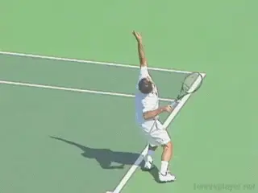
What actually happens when the torso rotates in elite serving?
[What is the role of torso rotation in the serve?] Without doubt it is one of the most varied elements among top servers, and also, one of the biggest differences between the men and women on the tour.
Some of the greatest servers in history-John McEnroe, Pete Sampras, even Roger Federer-- turn away from the ball so far that their backs approach parallel to the baseline.
Many other top players turn far less including players from Greg Rusedski to Novak Djokovic to Rafael Nadal. And on the women's side, with few exceptions, the turn is usually very limited. This is in fact a possible explanation for the serving problems of some top players. (link for an analysis of Jelena Jankovic's motion.)
In the first article in this new series, we addressed one of the other major disputed issues in pro serving, "racket head speed," a term that is thrown around extremely loosely by coaches and commentators, but with very little supporting data. How fast is the racket really going in a world class serve, and when, and for how long? (link.)
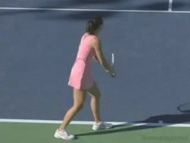
Many pro servers have far less turn away from the ball-especially among the women.
We were able to address this issue through one of the very few quantitative studies of a top player ever undertaken in match play. In collaboration with my good friend and our valued TPA contributor Brian Gordon, we did a 3D filming of the serve of Pete Sampras during an exhibition he played against Sam Querry--part of his preparation for his match series against Roger Federer.
Brian's work is taking our understanding of the game to a different level, not only in his creation of quantified data bases, but in his evolving ability to do real time 3D measurements of players at all levels. More on all that in the near future. (In the meantime, to see Brian's articles on the serve link.) I feel very lucky to be collaborating with him and, through his generosity, to have the opportunity to ask some of my own questions of this amazing data.
The Key 1/10th
In that first article we saw that the data showed that the key moment in the acceleration of the racket lasts only a split second, with the racket gaining about two thirds of its speed in just one tenth of a second. This is from the time of the racket drop until contact. This is a fraction of the duration of the motion, which, in its entirety, takes over 2 seconds to complete!
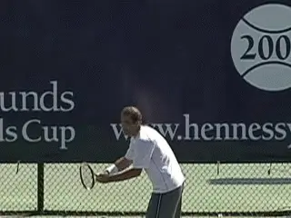
How much does Pete rotate, when, and what the differences in the hips and shoulders?
Now in this second article let's ask some similar questions about the rotation of the hips and shoulders, and see what this revolutionary, scientific perspective can tell us. Let's see how much turn there really is Sampras's serve, when this turn occurs, and the critical and surprising differences in the position of the hips and shoulders over the course of the motion.
We'll see in particular [how the angle between the hips and the shoulders changes dramatically in that same critical fraction of a second when most of the racket head acceleration occurs-the 1/10th of a second between the racket drop and the contact.] Is this an unrecognized key in developing a high level serve?
Previously, in writing about the topic of body turn on the serve, I've danced around the distinction between the hips and the shoulders, referring to the movement as "torso" rotation. In studying video I found it was very difficult to accurately perceive differences between the hips and shoulders at various points in the motion. Sometimes they appeared to be aligned, other times not, and often it was impossible to tell.
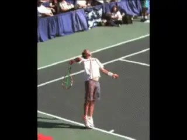
With Brian's data we can actually measure the timing and angles of body rotation.
Now we have the data to actually do that analysis, and see what the angles are over the course of the motion. To make this possible, I asked Brian to draw one line across Pete's body connecting the hip joints, and a second line connecting the joints of the shoulders. By comparing the angles of these two lines to the baseline as Pete goes through his motion, we can see the positions of the hip and shoulders, and their positions relative to each other.
We can also see exactly when these rotations occur. We can see how long it takes Pete to move through the turn, how long it takes him to rotate back into the contact, and then what happens to the rotation in the followthrough. This data is especially interesting because coaches and researchers have long posited that the separation and independent movement of the shoulders and hips, and the timing of these movements, is critical in high level serving.
We have a long way to go to fully understand what all this means, and obviously we need to look at multiple players, but the motion of Pete Sampras is a great place to start. At the very least it can help us frame some of the issues.
Phase 1 Hip Shoulder Angle Duration Angle Angle Difference (Approx) Ready Position 92 85 Degrees Hips +7 Zero Degrees Degrees
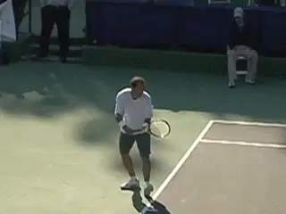
In the first half second, Pete's body turns about 40 degrees, with the shoulders turned slightly further than the hips.
So?
So how much does Pete turn and when? What are the relative angles of his hips and shoulders to the baseline and to each other at the various stages of the motion? How long do each of these phases really take? Let's start at the beginning of the motion and see.
In his starting position, Pete's entire torso appears to be at about a right angle, or 90 degrees to the baseline, as we have noted in previous analyses. (link.)
Brian's data shows that the hips are actually turned a little further away, at 92 degrees to the baseline, or just past perpendicular. The shoulders in contrast are turned slightly less and are slightly open, at about 85 degrees to the baseline. Still that's pretty close to square.
Now what happens as the torso starts to turn away from the net? As the motion starts, the arms start to drop. As this happens, the entire body immediately begins to turn away.
How much? In the first half second of the motion, the angle of the turn increases significantly. The shoulders also catch up with the hips and then actually move ahead, turning about 8 degrees further away from the net, so that relationship now changes for the first time, but far from the last.
Phase 2 Hip Shoulder Angle Duration Angle Angle Difference (Approx) Arm Drop 122 130 Degrees Shoulders +8 1/2 Second Degrees Degrees
At this point the actual angles are this. The hips are turned 122 degrees away from the baseline, and the shoulders are turned 130 degrees. In other words, at the drop of the arms, Pete has already turned his body about 40 degrees away from his starting position, but the shoulders are turned slightly further than the hips, even though they started a little more open.
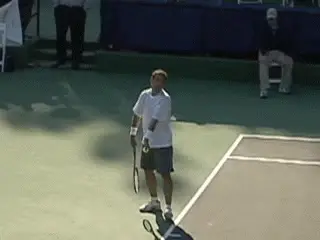
The full turn: 160 degrees to the baseline, tossing arm extended, maximum knee bend, racket forearm horizontal.
Maximum Turn
From the arm drop, it takes about another half second to reach the point of maximum body turn. It's always been an interesting question how far this really is in Pete's motion. Brian's data shows that it is about 160 degrees to the baseline.
So his body doesn't turn all the way parallel to the baseline, but it is within 20 degrees. This is the largest amount of turn of probably any player in the history of the modern game, with the possible exception of John McEnroe.
What's the relation between the hips and shoulders at this point? Remember in the first half second, the shoulders were ahead. But when Pete reaches the maximum turn, the hips have caught up and are now even with the shoulders. Both are at that same 160 degree angle to the baseline.
Remember the total interval from the start of the motion to reach to this position of maximum body turn is about one second. So here is the summary so far. At the start, the hips are turned a little more. Half way through the shoulders have surged slightly ahead, but at the point of the greatest turn the hips catch up and the hips and shoulders are actually even.
[The bottom line is that when Pete reaches the maximum turn, the hips and shoulders have both turned around 70 degrees away from the starting position. Again, this is about about halfway through the entire 2 second duration of the serve.]
Phase 3 Hip Shoulder Angle Duration Angle Angle Difference (Approx) Full Turn 160 160 Degrees Even 1/2 Second Degrees
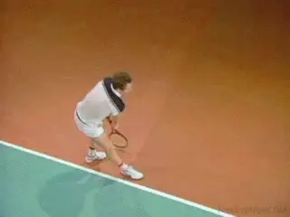
Did McEnroe have as much or more turn than Pete?
The Rest of the Body
The next question is, at this point of the greatest turn, where is the racket and where is the rest of Pete's body in the progression of the motion?
The completion of the turning motion coincides with the extension of the tossing arm. The racket is still on the way up from the bottom of the wind up. The arm and racket have yet to reach the power position, and the forearm is roughly parallel to the court. Although I haven't yet asked Brian for an angle on this, the bend in the legs also seems to be just about exactly at the maximum in the motion.
Racket Drop
So now what? What happens as the rotation starts back toward the contact? Do the hips and shoulders rotate in unison? The answer is no.
As with the motion turning away from the ball, there are differences in the angles of the shoulders and hips at different moments over the course of the rotation to contact. And this is where the issues get even more interesting and complex.
In the first article we saw that the critical position to create racket acceleration is what I call the pro racket drop. This is with the racket falling along Pete's side, at about a right angle to his torso, and with the racket tip pointing basically straight down at the court.
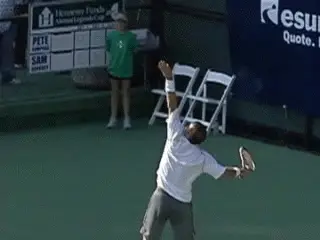
At the drop the shoulders are square and the hips are slightly ahead.
So what happens to the hips and the shoulders as Pete moves to this critical drop position? The motion from the turn to the racket drop takes about another half second, but the hips and shoulders do not move in unison during this interval.
As the rotation back toward the contact starts, the hips take the lead. In fact the hips rotate almost 20 degrees before the shoulders even begin to move.
The shoulders at this point remain at the same angle as they were at the maximum turn. But the hips move ahead, reaching an angle of 142 degrees to the baseline, while the shoulders are still at 160 degrees. This shift in the alignment happens in the first 2/10s of a second on the way to the drop, a little less than half the total interval.
But then the shoulders immediately start to catch up. In the next 2/10s of a second, the shoulder rotation accelerates until the angle of the hips and shoulders are again aligned.
Both are now at an angle of about 105 degrees to the baseline. Interestingly, this coincides with the actual lowest point the racket reaches in the backswing, just a fraction of a second before reaching the pro drop.
So the amount of rotation is now again equal. Both the hips and shoulders have rotated a total of a little over 50 degrees back from the point of maximum turn.
Phase 4 Hip Shoulder Angle Duration Angle Angle Difference (Approx) Pro Drop 78 90 Degrees Hips +12 1/2 Second Degrees Degrees
Pro Drop
But that's not the end of it. In the 1/10th of second it takes for the racket to move from its lowest point to the pro drop, the relationship changes again! Suddenly the hips surge ahead again. When the racket reaches the pro drop, the hips have rotated about 12 degrees ahead of the shoulders.
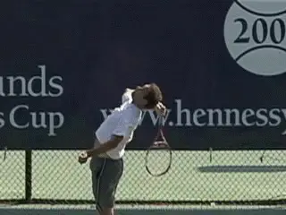
From 30mph to 90mph in about 1/10th of a second.
What are the angles? The shoulders are at about 90 degrees to the baseline. The hips, having turned further back toward the contact, are at about a 78 degree angle.
Move to Contact
So the hips are slightly ahead of the shoulders as the racket starts up toward contact. What happens now? You guessed it--the relationship changes again!
And this is in the briefest interval yet. As we saw in the first article it takes only 1/10th of a second for the racket to move from the drop to the contact, gaining 60mph of racket speed in this critical instant.
So during this instant that creates maximum racket head speed, what happens to the rotation? The shoulders now accelerate radically ahead of the hips. They go from being 12 degrees behind at the drop to 25 degrees ahead at the contact. All that change in 1/10th of a second!
So the shoulders lead the hips as the racket moves from the drop to the contact. And possibly equally important, the shoulders start this rotation from a position slightly behind, then zoom way ahead. At the drop the hips are a little ahead. Then in the moment when the majority of racket speed is created, the shoulders surge, catching up and rotating far further as the racket reaches contact.
Phase 5 Hip Shoulder Angle Duration Angle Angle Difference (Approx) Contact 45 20 Degrees Shoulders +25 1/10th Second Degrees Degrees
So have we hit on a critical element in the development of racket head speed?
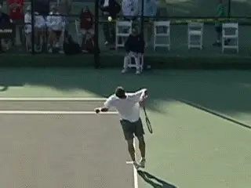
From some high speed camera angles you can actually see the shoulder surge.
Let's look at the numbers in a little more detail. Let's compare the angles at drop to those at the contact. The shoulders have gone from an angle of 90 degrees to the baseline to an angle of 20 degrees to the baseline. That is 70 degrees of rotation in 1/10th of a second!
The shoulders catch up and race ahead of the hips. But it's important to note that the hips don't stand still. In this same 1/10th of a second, the hips actually rotate 30 degrees. So they rotate a huge increment, but just not as much as the shoulders.
Again let's look at it in terms of the angles. When Pete strikes the ball, the hips are at about 45 degrees to the baseline. But the shoulders are around 25 degrees ahead at an angle of slightly less than 20 degrees. In that critical interval from drop to contact, both are speeding up and rotating. It's just that the shoulders lead this movement, going from an angle of 12 degrees behind the hips to an angle 25 degrees ahead.
So at the contact, the entire torso is definitely somewhat closed to the baseline. But the shoulders are closed half as much as the hips. (Or put it the other way, the hips are close twice as much as the shoulders.)
The obvious inference here is that this surge in the shoulder rotation must play a major role in the creation of the maximum racket head speed. What are the teaching implications? I can already hear coaches arguing over what this really means.
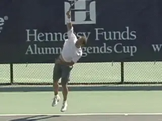
As the racket decelerates, the hips and shoulders come back into alignment.
Deceleration
So then what happens after contact? We saw in the racket speed study that the racket decelerates just as rapidly after contact as it accelerates before. In the 1/10th of a second after contact, it falls back from 90mph to 30mph. So the windows of acceleration and deceleration are virtual mirrors.
What happens to the hips and the shoulders in this deceleration? For a tiny fraction of a second, the shoulders continued to widen the difference in the separation, as they approach parallel to the baseline.
During this same interval the angle of the hips stays almost unchanged. But by the time the racket has actually decelerated to 30 mph, the hips are catching up again. A split second later, the hips and shoulders once again reach even. Now the angle of both is about 10 degrees to the baseline. So the torso is still slightly closed just before Pete's front foot lands inside the court, with the hips and shoulders once again aligned..
Phase 6 Hip Shoulder Angle Duration Angle Angle Difference (Approx) Deceleration 10 10 Degrees Even 1/10th Second Degrees
Questions
So there is the overview, and now a few questions. Having studied high speed video of Pete many times over the years, the fact that the numbers show the body is closed at contact is hardly surprising. What is a little surprising though is that 20 degree angle of the shoulders. In many examples on video, the angle appears to be more severe, that is, with the shoulders more closed than the numbers in Brian's study.
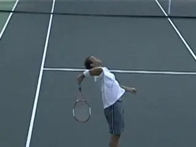
The appearance of the torso angles can be deceiving or are they?
I know from long experience though that these differences are often a function of camera angle-the same serve can look slightly different as the perspective of the viewer changes.Still it will be interesting in future filmings to record more events.
The serve we are studying in this article was hit down the T in the ad court. Do the numbers differ significantly if the serve is hit wide? What about in the deuce court? Do they vary slightly for even the same placement in the same court, depending, for example, or speed or spin?
I'm willing to bet that the basic fact that there is a surge of the shoulders from the drop to the contact will stay a constant, but it would be interesting to see if there are differences in the relative amounts of the rotation.
And what about other players? Is the relationship of the shoulder and hip movement the same for other great servers? Is it somehow unique to Pete? Are there differences or similarities for players like Andy Roddick or Roger Federer or others?
If we study more elite servers will we discover the shoulder surge is a commonality? If so will the amount vary significantly among players, and how?
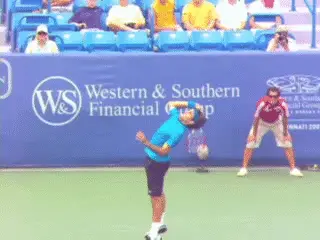
Will we see similar patterns of hip and shoulder rotation in other elite servers?
Another factor to consider is how I asked Brian to do this measurement-by using a line through the joints of the shoulder running from left to right. As the shoulders rotate, how much if any does the right shoulder rotate forward on its own? And if it does, does this skew the angle of the line I asked Brian to draw? Like I said we are just scratching the surface in what this amazing quantitative approach can really tell us.
But I think this study does firmly establish a few basic points.
-
[Sampras turns away from the ball about 70 degrees from his ready position. His back is almost, but not quite parallel to the baseline.]
-
[From this maximum turn, his forward torso rotation to the contact is well over a hundred degrees. Both the hips and shoulders are still closed at contact.]
-
[But in the last instant, when most of the racket speed is developing, the rotation of the shoulders surges significantly ahead.]
So obviously, the data is fascinating. It means something that possibly the greatest server in tennis history turns so far off the ball. It means something that the amount of this turn away from the ready position is virtually identical for the hips and the shoulders.
It means something that the hips start the forward rotation back toward the contact.
It means something that in the critical acceleration phase, from the racket drop to the contact, the shoulders accelerate ahead of the hips, but the hips still rotate in a major way as well. It means something that even with the shoulders ahead, the entire torso is still closed at contact.
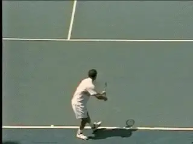
Pete's use of the extreme turn, means something for sure, but we need to learn more.
Implications
The obvious question is should players try to imitate this complex rotation pattern? Could they even if they wanted to?
Can players actually manipulate these types of lightening changes in the angles of the hips and shoulders? Or do those changes happen naturally as a function of other factors?
Or how about a couple of even broader questions? Does increased rotation actually generate increased racket speed and therefore potentially more ball speed and/or spin?
Or is the main advantage in the big turn actually not biomechanical and really a matter of disguise? Or is it some combination of both? Do players with less turn have the same shoulder surge or any at all?
Before we attempt to address those questions, however, let's continue to mine Brian's incredible data. We've looked at the angle of the hips and shoulders in this article. In the next installment, we'll look at the actual speeds of these rotations--not just the angles-- and see what that information confirms, denies, confuses, or further reveals. Stay tuned!
To view the complete Stroke Archives of Pete Sampras serves, [] click here.

John Yandell is widely acknowledged as one of the leading videographers and students of the modern game of professional tennis. His high speed filming for Advanced Tennis and TPA have provided new visual resources that have changed the way the game is studied and understood by both players and coaches. He has done personal video analysis for hundreds of high level competitive players, including Justine Henin-Hardenne, Taylor Dent and John McEnroe, among others.
In addition to his role as Editor of TPA he is the author of the critically acclaimed book Visual Tennis. The John Yandell Tennis School is located in San Francisco, California.